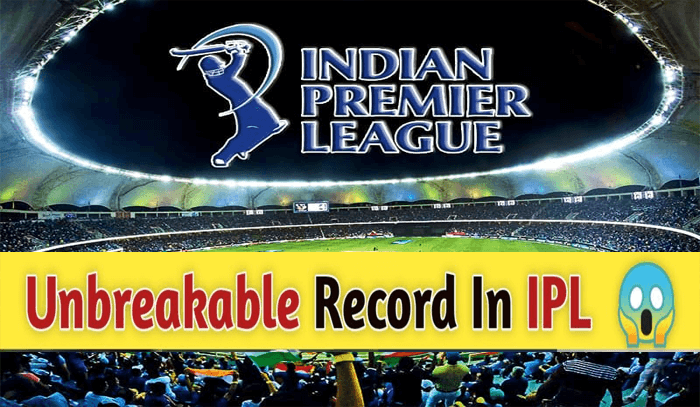
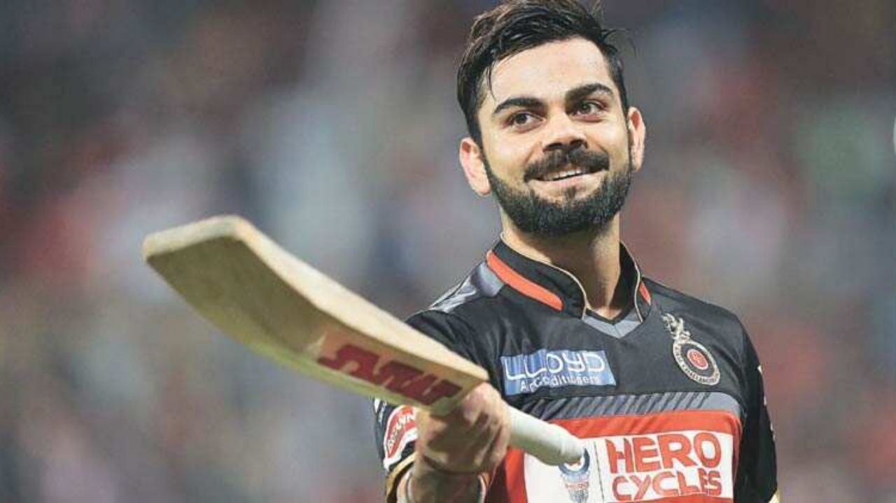
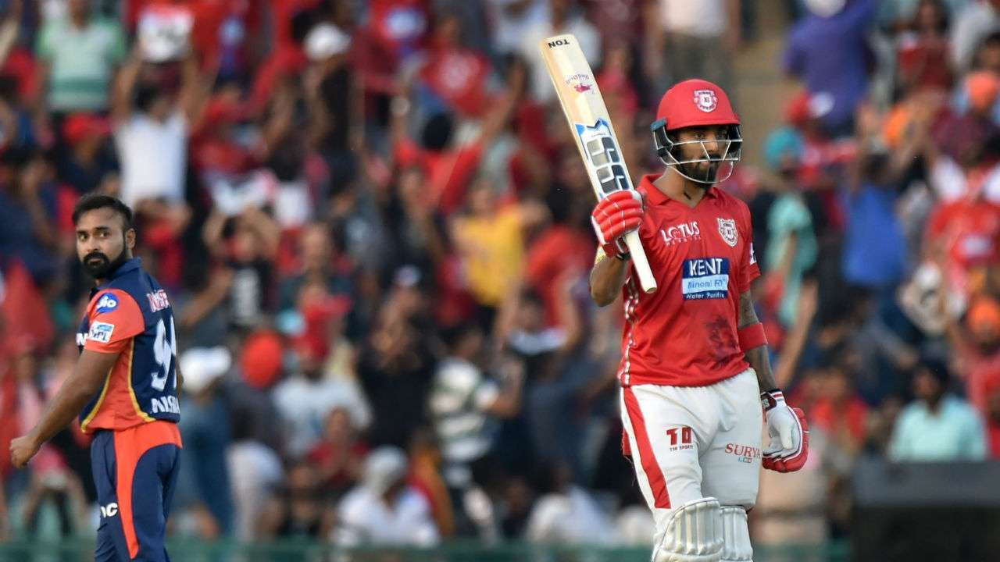
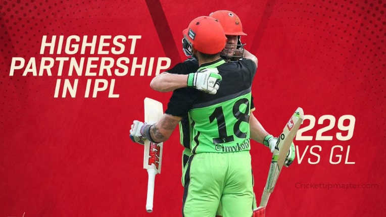

Unbreakable Records in IPL

1.Virat the king has scored the unbreakable score ever in IPL 2016.
he was scored about "973"runs in the single season. In 2015 virat
has didn't perform well in the all aspects. All the people said that
he didn't play now a days . But virat didn't care that and came to play in the
IPL 2016 and scored unbreakable 973 runs it was a very good come back
from king kholi.

2.KL Rahul had scored a fifty off 14 balls against Delhi Capitals (DC)
in IPL 2018. The record for the fastest 50 in IPL history. KL
Rahul hit a blistering 51runs in 14 balls in 2018. Until 2018,
the recordwas jointly held by Yusuf Pathan and Sunil Narine
who scored 50 runs off 15 balls.

3. The two legends of the cricket Virat and ABD made a record.
On This Day in 2016: When Virat Kohli and AB de Villiers Recorded
229-run Partnership for RCB vs Gujarat Lions in IPL. This is the
top 1 unbreakable patership ever in IPL history.
